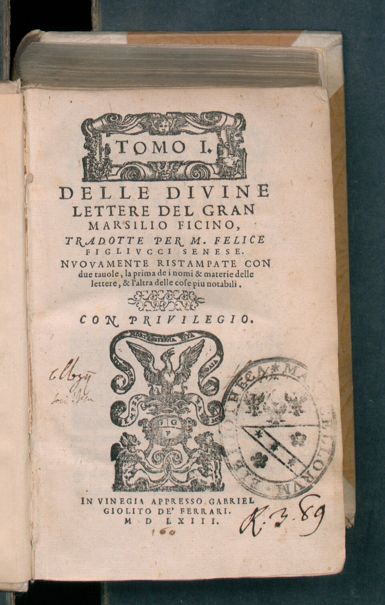
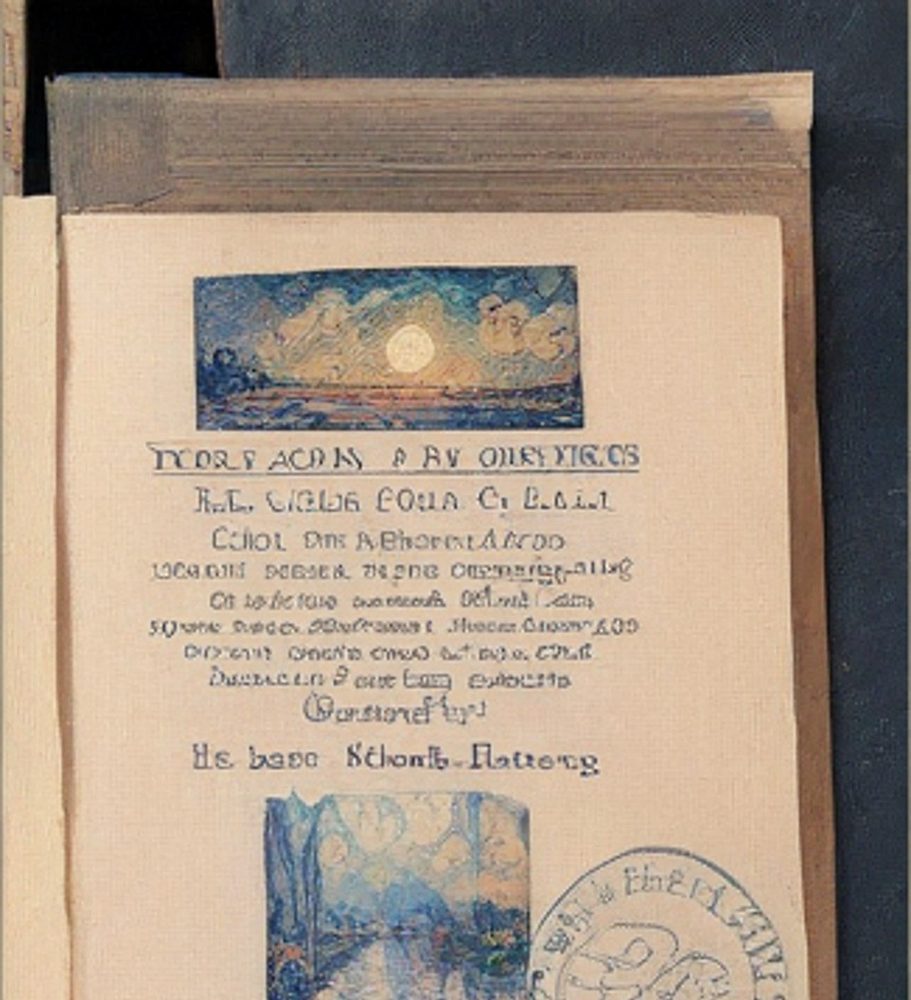
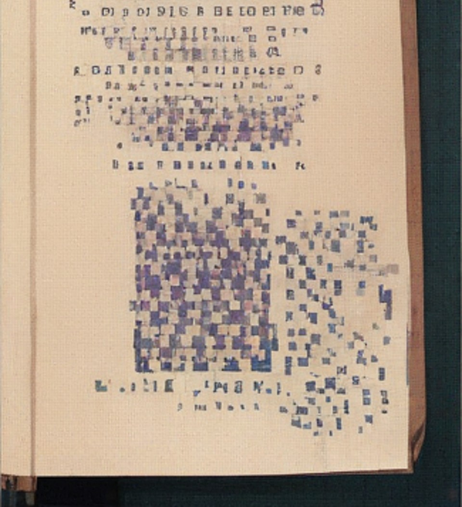

Marsilio Ficino; ( Latin name: Marsilius Ficinus; 19 October 1433 – 1 October 1499) was an Italian scholar and Catholic priest who was one of the most influential humanist philosophers of the early Italian Renaissance. He was an astrologer, a reviver of Neoplatonism in touch with the major academics of his day, and the first translator of Plato's complete extant works into Latin.[2] His Florentine Academy, an attempt to revive Plato's Academy, influenced the direction and tenor of the Italian Renaissance and the development of European philosophy.

Ficino was born at Figline Valdarno. His father, Diotifeci d'Agnolo, was a physician under the patronage of Cosimo de' Medici, who took the young man into his household and became the lifelong patron of Marsilio, who was made tutor to his grandson, Lorenzo de' Medici. Giovanni Pico della Mirandola, the Italian humanist philosopher and scholar, was another of his students.[3]

During the sessions at Florence of the Council of Ferrara-Florence in 1438–1445, when attempts to heal the schism of the Eastern (Orthodox) and Western (Catholic) churches had thus far failed, Cosimo de' Medici and his intellectual circle had made acquaintance with the Neoplatonic philosopher George Gemistos Plethon, whose discourses upon Plato and the Alexandrian mystics so fascinated the humanists of Florence that they named him the second Plato. In 1459 John Argyropoulos was lecturing on Greek language and literature at Florence, and Ficino became his pupil.[4] When Cosimo decided to refound Plato's Academy at Florence, he chose Ficino as its head. In 1462, Cosimo supplied Ficino with Greek manuscripts of Plato's work, whereupon Ficino started translating the entire corpus into Latin[5] (draft translation of the dialogues finished 1468–69;[6] published 1484). Ficino also produced a translation of a collection of Hellenistic Greek documents found by Leonardo da Pistoia later called Hermetica,[7] and the writings of many of the Neoplatonists, including Porphyry, Iamblichus, and Plotinus. Among his many students were Niccolò Valori [8][9] and Francesco Cattani da Diacceto. The latter was considered by Ficino to be his successor as the head of the Florentine Platonic Academy.[10] Diacceto's student, Giovanni di Bardo Corsi, produced a short biography of Ficino in 1506.[11]
Though trained as a physician, Ficino became a priest in 1473.[12][13][14] In 1474 Ficino completed his treatise on the immortality of the soul, Theologia Platonica de immortalitate animae[4] (Platonic Theology) and De Christiana Religione (On the Christian Religion), a history of religions and defense of Christianity.[15] In the rush of enthusiasm for every rediscovery from Antiquity, he exhibited some interest in the arts of astrology (despite denigrating it in relation to divine revelation), which landed him in trouble with the Catholic Church. In 1489 he was accused of heresy before Pope Innocent VIII[4] and was acquitted. Writing in 1492 Ficino proclaimed: "This century, like a golden age, has restored to light the liberal arts, which were almost extinct: grammar, poetry, rhetoric, painting, sculpture, architecture, music ... this century appears to have perfected astrology." — Marcilio Ficino, A letter to a friend (1492) Ficino's letters, extending over the years 1474–1494, survive and have been published.[4] He wrote De amore (Of Love) in 1484. De vita libri tres (Three books on life), or De triplici vita[16] (The Book of Life), published in 1489, provides a great deal of medical and astrological advice for maintaining health and vigor, as well as espousing the Neoplatonist view of the world's ensoulment and its integration with the human soul: There will be some men or other, superstitious and blind, who see life plain in even the lowest animals and the meanest plants, but do not see life in the heavens or the world ... Now if those little men grant life to the smallest particles of the world, what folly! what envy! neither to know that the Whole, in which 'we live and move and have our being,' is itself alive, nor to wish this to be so.[17]
One metaphor for this integrated "aliveness" is Ficino's astrology. In the Book of Life, he details the interlinks between behavior and consequence. It talks about a list of things that hold sway over a man's destiny. Regardless, in his later extensive commentary on Plotinus's Ennead III, he actively and systematically repudiated the Neoplatonic account of the soul, the hypostasis Soul's unity, as well as the transmigration of the soul, the soul's eternity as opposed to mere imperishability, and the notion that the soul was created by intermediaries and not by God directly. Instead he preferred to interpret all of these more pagan Neoplatonic points, as Stephen Gersh comments in his Analytic Study of the same work, as moral allegories―in keeping with his general tendency towards concordance between Platonism and Christianity.[18]
The Platonic Theology (Latin: Theologia platonica de immortalitate animorum) is a work consisting of eighteen books by Marsilio Ficino. Ficino wrote it between 1469 and 1474 and it was published in 1482.[1] It has been described as Ficino's philosophical masterpiece.[2] The main concern of the work is to set forth a rational argument for the immortality of the human soul. Ficino ascribes to the human soul a middle position in a five-part division of things: between God and angelic beings on the one side, and qualities and bodies on the other.[3] Ficino believed that Platonism was compatible with Christianity, unlike Aristotelianism, which, though ambiguous on the subject of immortality, had been philosophically ascendant since the thirteenth century.[4] Book IV, chapter 2, is a typical example of one of Ficino's arguments in support of the immortality of the soul. Citing various Platonic texts, alongside works by Augustine and Origen, he attempts to prove that the soul has a natural desire to attain knowledge of the highest truth and the greatest good — knowledge, in other words, of God — and that the satisfaction of this desire is the source of our greatest happiness. Since, however, neither this knowledge nor this happiness can be acquired in the present life, it must be achieved in the next. If this were not the case, then the aspiration, implanted in our minds by God, to penetrate to the cause of all causes and thereby achieve happiness would be useless and futile. The soul, therefore, must be immortal. — Luc Deitz, Cambridge Translations of Renaissance Philosophical Texts (1997)[4]
Ficino's work was also meant to compete with the ancient Platonic Theology of Proclus.[5] Proclus was widely available to Western scholars via the thirteenth-century translations of the Flemish Dominican, William of Moerbeke.[6] Ficino viewed Proclus as a non-Christian Platonist, and moreover derivative of the "Platonic theology" of Dionysius the Areopagite.[7] Ficino wanted to offer a similar style of Platonist philosophy which nonetheless affirmed Christian belief.[5] Ficino directed the Platonic Theology toward his fellow Renaissance ingeniosi, or intellectuals, in the Republic of Florence, including the political elites.[8] In agreement with Plato, in the work Ficino argued for the immortality of the soul, and the Fifth Council of the Lateran was probably influenced by this in its decree Apostolici Regiminis against Christian mortalism.[9]
Probably due to early influences from his father, Diotifeci, who was a doctor to Cosimo de' Medici, Ficino published Latin and Italian treatises on medical subjects such as Consiglio contro la pestilenza (Recommendations for the treatment of the plague) and De vita libri tres (Three books on life). His medical works exerted considerable influence on Renaissance physicians such as Paracelsus, with whom he shared the perception on the unity of the microcosmos and macrocosmos, and their interactions, through somatic and psychological manifestations, with the aim to investigate their signatures to cure diseases. Those works, which were very popular at the time, dealt with astrological and alchemical concepts. Thus Ficino came under the suspicion of heresy; especially after the publication of the third book in 1489, which contained specific instructions on healthful living in a world of demons and other spirits.[19]
The De vita libri tres (Three Books on Life), or De triplici vita,[1] was written in the years 1480–1489 by Italian Platonist Marsilio Ficino. It was first circulated in manuscript form and then published on December 3, 1489.[2] It was constantly in print through the middle of the seventeenth century.
The first book is about physical health, the second is about prolonging life, and the third (De vita coelitùs comparanda) is about astral influences. The work focuses not on the soul or body, but on the spiritus, which is described early on:[3] only the priests of the Muses, only the hunters after the supreme good and truth are so negligent (alas) and so unfortunate that they seem utterly to neglect that instrument by which they can, in a way, measure and grasp the whole world. An instrument of this sort is the spirit, which by the physicians is defined as a certain vapour of the blood, pure, subtle, hot and lucid. And, formed from the subtler blood by the heat of the heart, it flies to the brain, and there the soul assiduously employs it for the exercise of both the interior and exterior senses. Thus the blood serves the spirit, the spirit the senses, and finally the senses reason.— I, ii[4] The work focuses on the health and well-being of the scholar. Scholars are described as being naturally prone to extremes of melancholy and thus the ambivalent influence of Saturn, which can be remediated by the influence of the benign planets (the Sun, Jupiter, Venus and Mercury).[5] Ficino considers three types of things beneficial to the spirit: wines and aromatic substances, odours and clean air, and music. Music is described as probably the most important:[6] if the vapours exhaled by merely vegetable life are greatly beneficial to your life, how beneficial do you think will be aerial songs to the spirit which is indeed entirely aerial, harmonic songs to the harmonic spirit, warm and thus living to the living, endowed with sense to the sensitive, conceived by reason to the rational?— II, xv[7]
De vita is an amalgam of philosophy, medicine, magic and astrology. Alongside passages explaining the immortality and divine source and nature of the soul, there are astrological charts and remedies, speeches from various Greek gods arguing with one another, philosophical digressions, medieval prescriptions for various ills, attempts at reconciling the Neoplatonism of Plotinus with Christian scripture, and magical remedies and talismans. Ficino was one of the major philosophical voices of the Italian Renaissance, but he was also a physician, and the son of a physician. De vita is an example of the medical thinking of the early Renaissance, steeped in Galen and Hippocrates and the theory of the four humors and their attendant Aristotelian qualities (e.g., hot, cold, moist, dry), but also beginning to align this viewpoint with the awakening sense of the archetypal significance of the pagan gods, derived from the first exposure in the West for many centuries to the dialogues of Plato and to the Hermetica. (Ficino was the first translator of Plato into Latin.) The result—particularly in the third book—is a work which takes the pagan Classical god-archetypes quite literally, and personifies them with the planets which are named for them. For Ficino, the planets affect the tenor and vigor of the intellectual's mind and the health of his body. But the main thrust of de Vita is the notion that there are remedies and balances that can be undertaken to mitigate their effect—in fact, to change the temper, even the fate, of a human being. In this regard, Ficino shows his deeply humanist point of view, which sets him apart from earlier writers. The book's thrust depends on the tension Ficino tries to resolve intellectually—a tension that is typical of the syncretism of much of the early Renaissance—between Classical philosophy and religion and Christian belief. By filtering both through cosmology of Plato, Ficino attempts to reconcile these world-views.An English translation by Charles Boer of the De vita was published in 1982. A critical edition and English translation of the Three Books on Life, with the Latin on one page and the English translation on the facing page, with Introduction and Notes, by Carol V. Kaske and John R. Clark, was re-published in 1998 and again in 2002 by The Arizona Center for Medieval and Renaissance Studies, in conjunction with The Renaissance Society of America.
Notably, Ficino coined the term Platonic love, which first appeared in his letter to Alamanno Donati in 1476. In 1492, Ficino published Epistulae (Epistles), which contained Platonic love letters, written in Latin, to his academic colleague and life-long friend, Giovanni Cavalcanti, concerning the nature of Platonic love. Because of this, some have alleged Ficino was a homosexual, but this finds little basis in his letters or his general works and philosophy.[20] In his commentary on the Republic, too, he specifically denies to his readers that the homosexual references made in Plato's dialogue were anything more than to bemuse the audience, "spoken merely to relieve the feeling of heaviness".[21] Regardless, Ficino's letters to Cavalcanti resulted in the popularization of the term Platonic love in Western Europe.[citation needed]
Ficino died on 1 October 1499 at Careggi. In 1521 his memory was honored with a bust sculpted by Andrea Ferrucci, which is located in the south side of the nave in the Cathedral of Santa Maria del Fiore.[22]